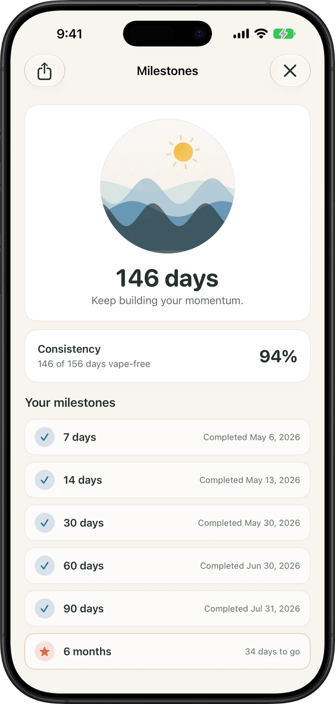

Among the withdrawal symptoms people experience when giving up disposable vapes or nicotine pods, such as irritability, restlessness, and trouble sleeping (Hughes, 2007), brain fog or trouble concentrating is often one of the most frustrating. Many people describe feeling as if their thoughts are moving slowly, making it harder to write emails, read, or keep up with daily tasks.
This mental sluggishness is not a personal failure or permanent damage. Nicotine acts on nicotinic receptors in the brain (Benowitz, 2009), and when you stop vaping, your nervous system needs time to adjust. Knowing the general withdrawal timeline makes this temporary dip much easier to navigate.
| Timeframe | General Adjustment Phase | Common Cognitive Experience | Practical Focus Tip |
|---|---|---|---|
| Days 1–3 | Early adjustment to stopping nicotine | Trouble concentrating, restlessness, or strong urges to reach for a vape | Stay hydrated, eat balanced meals, and take 10–15 minute brisk walks |
| Days 4–7 | Most withdrawal symptoms peak within the first week (Hughes, 2007) | Fluctuating attention, often worse after a short or broken night | Aim for regular sleep; replace vaping breaks with short breathing pauses |
| Weeks 2–4 | Most withdrawal symptoms ease over 2 to 4 weeks (Hughes, 2007) | Gradual improvement in focus and day-to-day concentration for many people | Work in short focused sprints (25 min work, 5 min rest) and track your streak |
| Month 1+ | Cravings come and go and get weaker over time (Smokefree.gov) | Steadier mental stamina for most people without needing nicotine breaks | Keep consistent sleep, hydration, and stress routines |
Why Stopping Nicotine Vapes Can Trigger Brain Fog
Most e-cigarettes contain nicotine, which is highly addictive (CDC). Because nicotine acts on nicotinic receptors in the brain (Benowitz, 2009), frequent puffing throughout the day trains your routine around regular stimulation.
When you stop vaping, your body has to adapt to functioning without nicotine. Trouble concentrating is a well-documented symptom of tobacco and nicotine withdrawal (Hughes, 2007; Smokefree.gov). It often shows up alongside:
- Sleep disruption: Difficulty falling or staying asleep during early withdrawal can leave you feeling foggy the next day.
- Restlessness and impatience: Both are listed as valid withdrawal symptoms (Hughes, 2007), and losing your frequent vape micro-breaks can make sustained work feel unfamiliar at first.
4 Practical Habits to Help Manage Vaping Brain Fog
While adjustment takes time, you can support daily focus with four straightforward habits:
- Eat Steady, Balanced Meals: Skipping meals can make fatigue and distractibility feel worse. Meals with protein, fiber, and healthy fats (such as eggs, fish, nuts, and vegetables) help keep your energy steadier throughout the day.
- Stay Hydrated: Even mild dehydration can contribute to headaches and sluggish focus. Keep a glass or bottle of water nearby, especially during moments when you would normally reach for a vape.
- Take Short Movement or Breathing Breaks: When afternoon sluggishness hits and your habit reflex reaches for a vape, step away for a 5-minute walk or take a few slow, deep breaths. A brief change of pace can help you reset without nicotine.
- Go Easy on Sugar and Extra Caffeine: It is tempting to replace vape breaks with sugary snacks or extra coffee. However, energy crashes or too much caffeine can worsen restlessness and interfere with sleep, making focus harder the next day.
Withdrawal Symptom or Something Else?
Not every bad day after quitting is nicotine withdrawal. Hughes (2007) sorted the effects of stopping tobacco into three groups. Use it to work out what is behind your fog:
| Group in Hughes (2007) | Symptoms | What it means for brain fog |
|---|---|---|
| Valid withdrawal symptoms (peak in week 1, last 2–4 weeks) | Anger, anxiety, depression, difficulty concentrating, impatience, insomnia, restlessness | Expected in the first month. Should get steadily easier week by week. |
| Possible abstinence effects | Constipation, cough, dizziness, increased dreaming, mouth ulcers | Can show up, but the evidence is weaker. Vivid dreams can make sleep feel less restful. |
| Not abstinence effects | Drowsiness, fatigue, several physical symptoms | If you mainly feel tired, look at sleep, meals, caffeine and stress before blaming nicotine. |
One limit: these studies were done with people who stopped smoking, not vaping. Vapes deliver nicotine too, and the same withdrawal symptoms are listed for quitting nicotine in general (Smokefree.gov), but vaping-specific time courses have been studied far less. Treat the 2 to 4 week range as a guide, not a deadline.
A Simple Focus Check: Week 1 vs. Week 3
Brain fog is hard to judge from inside one bad afternoon. A quick self-check makes the trend visible:
- On day 3 or 4, rate your focus from 1 to 10 at the same time of day, and note how many hours you slept.
- Repeat on day 10 and day 21.
- If the score rises while sleep stays steady, withdrawal is easing. If the score only drops on short nights, sleep is the main lever.
For the full day-by-day picture beyond focus, see the vaping recovery timeline. If urges spike when you are trying to concentrate, the urge-surfing guide walks through a short breathing routine to wait them out.
Built into Quit Vaping
See how many vape-free days you have behind you
On a foggy afternoon it helps to see the streak. Quit Vaping counts your vape-free days and money saved and shows general withdrawal milestones, stored only on your iPhone.
Track My Vape-Free Days on iOS →
What to Expect as Withdrawal Eases
For most people, trouble concentrating and other nicotine withdrawal symptoms peak within the first week and last 2 to 4 weeks (Hughes, 2007). If brain fog feels severe, lasts longer than a month, or comes with persistent low mood or sleep trouble, talk to a doctor or healthcare provider.
On slow days it can help to count what you no longer spend: the disposable vape savings guide shows typical yearly totals.
Sources
- Benowitz NL. Pharmacology of nicotine: addiction, smoking-induced disease, and therapeutics. Annu Rev Pharmacol Toxicol, 2009.
- Centers for Disease Control and Prevention (CDC). E-Cigarettes (Vapes).
- Hughes JR. Effects of abstinence from tobacco: valid symptoms and time course. Nicotine Tob Res, 2007.
- Smokefree.gov. Understanding Withdrawal.